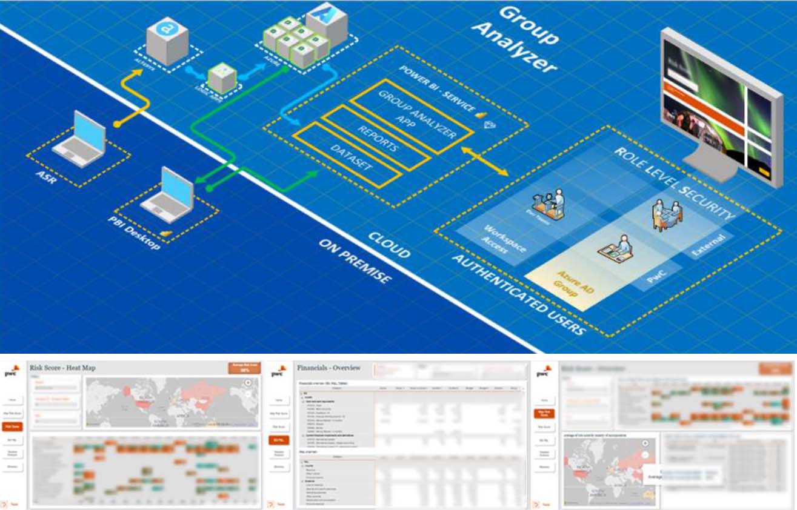

<div id="ajax-page" class="ajax-page-content">
  <div class="ajax-page-wrapper">
    <div class="ajax-page-nav">
      <div class="nav-item ajax-page-prev-next">
        <a class="ajax-page-load" href="portfolio-3.html"
          ><i class="lnr lnr-chevron-left"></i
        ></a>
        <a class="ajax-page-load" href="portfolio-2.html"
          ><i class="lnr lnr-chevron-right"></i
        ></a>
      </div>
      <div class="nav-item ajax-page-close-button">
        <a id="ajax-page-close-button" href="#"
          ><i class="lnr lnr-cross"></i
        ></a>
      </div>
    </div>

    <div class="ajax-page-title">
      <h1>Financial Risk Analyzer</h1>
    </div>

    <div class="row">
      <div class="col-sm-8 col-md-8 portfolio-block">
        <div class="owl-carousel portfolio-page-carousel">
          <div class="item">
            
          </div>
          <div class="item">
            
          </div>
          <div class="item">
            
          </div>
        </div>
        <!--  -->
        <div
          class="portfolio-page-video embed-responsive embed-responsive-16by9"
        >
          <!-- <iframe class="embed-responsive-item" src="https://player.vimeo.com/video/97102654?autoplay=0"></iframe> -->
        </div>

        <script type="text/javascript">
          jQuery(document).ready(function ($) {
            $(".portfolio-page-carousel").imagesLoaded(function () {
              $(".portfolio-page-carousel").owlCarousel({
                smartSpeed: 1200,
                items: 1,
                loop: true,
                dots: true,
                nav: true,
                navText: false,
                margin: 10,
                autoHeight: true,
              });
            });
          });
        </script>
      </div>

      <div class="col-sm-4 col-md-4 portfolio-block">
        <!-- Project Description -->
        <div class="project-description">
          <div class="block-title">
            <h3>Description</h3>
          </div>
          <ul class="project-general-info">
            <li><p><i class="fa fa-globe"></i> <a href="#" target="_blank">www.pwc.ch</a></p></li>
            <li><p><i class="fa fa-calendar"></i> 2021-2022</p></li>
          </ul>
            <p class="text-justify">
              The goal of this project is to visualize financial risks data from
              an Alteryx process that calculates them on the financial
              statements item level. The report has the ability of automatically
              printing out hundreds of iterations of the risk analysis per
              company.
            </p>
          </ul>
          <!-- Technology -->
          <div class="tags-block">
            <div class="block-title">
              <h3>Technology</h3>
            </div>
            <ul class="tags">
              <li><a>Power BI</a></li>
              <li><a>Share Point</a></li>
              <li><a>Azure</a></li>
              <li><a>Power Automate</a></li>
            </ul>
          </div>
          <!-- /Technology -->

          <!-- Share Buttons -->
          <div class="btn-group share-buttons">
            <div class="block-title">
              <h3>Share</h3>
            </div>
            <a href="#" target="_blank" class="btn"
              ><i class="fab fa-facebook-f"></i>
            </a>
            <a href="#" target="_blank" class="btn"
              ><i class="fab fa-twitter"></i>
            </a>
            <a href="#" target="_blank" class="btn"
              ><i class="fab fa-dribbble"></i>
            </a>
          </div>
          <!-- /Share Buttons -->
        </div>
        <!-- Project Description -->
      </div>
    </div>
  </div>
</div>
